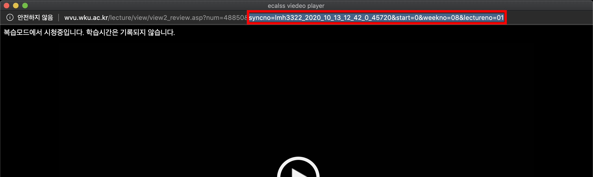

이용 방법
①강의를 실행 후 링크의 뒷부분 "syncno"부터 복사해주세요
①URL 부분에 복사한 링크를 붙여 넣어주세요
②"Make DownLoad" 버튼을 눌러주세요
MacOS - Safari Browser
①하단에 생성된 텍스트를 마우스 오른쪽으로 클릭
②"링크된 파일 다운로드"를 눌러주세요
Windows & MacOS - Etc Browser
①하단에 생성된 텍스트를 마우스 오른쪽으로 클릭
②"다른 이름으로 링크 저장"를 눌러주세요